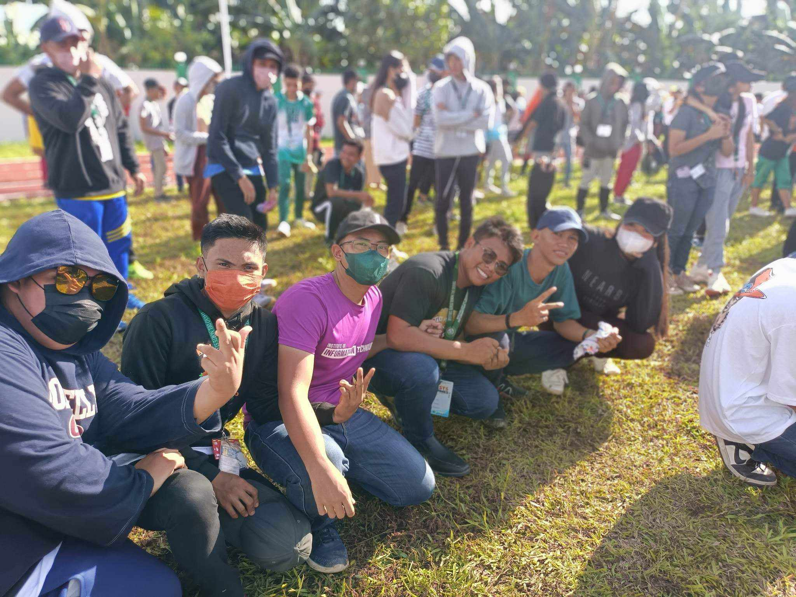

2022 - 2024
HEY THERE, MARIA FLOR HERE!

Hi! I'm Maria Flor M. Besinan, from BSIT 3C
Always come and visit my profile!
MARIA FLOR BESINAN
Hi! I'm Maria Flor M. Besinan, from BSIT 3C
Always come and visit my profile!
Practice and performance of dance for CHARTER DAY at DNSC Sports Complex
After our modern dance performance, we proceeded to jazz chant and had a groupfie with classmates, BSIT 1G.